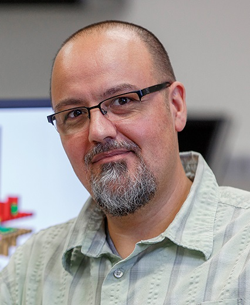
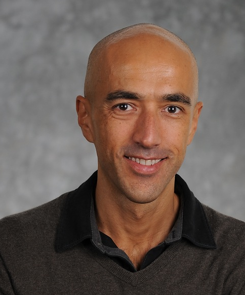

October 23, Schanzeneckstrasse 1, Room A003, UniBe / UniS, Bern
What are the challenges in software engineering today?
This event will not answer the question, but will raise the question. Or better yet, it will raise multiple questions and spawn discussions.
To seed these discussions, we will sample the space with four highly distinct talks covering distinct topics such as the nature of software engineering, the challenge of making decisions about large data, or the future of debugging.
| Until October 8 | After October 8 | |
| S-I member | 200 CHF | 250 CHF |
| Non S-I member | 300 CHF | 350 CHF |
| Student | 30 CHF | 50 CHF |
Schedule
Dave Thomas
Chief Scientist/CSO, First Derivatives
Andrian Marcus
Associate Professor, University of Texas
| Until October 8 | After October 8 | |
| S-I member | 200 CHF | 250 CHF |
| Non S-I member | 300 CHF | 350 CHF |
| Student | 30 CHF | 50 CHF |
Think? Compute! See!!
End User Computation for Thinkers
The emerging discipline of Computational Science brings Thinkers and Software Experts together to create problem-solving solutions for Thinkers. In this talk, we discuss our experience building Ivy, and interactive visual analytics environment for Thinkers. We present the user requirements and challenges making of the art software technologies including functional vector programming, copious data acquisition, complex query and visualization exploration consumable by demanding customers we call Thinkers.
Thinkers are well-educated domain and problem focused computationally literate end users. On a daily basis they live in BigData, to collaboratively solve their business and technical challenges. Thinkers need a capability to Think-Compute-See and to actively participate in problem solutions. They reject being passive misunderstood requirements-changing Agile customers; have no use for end user tools for question the cost and complexity of accepted software engineering approaches. Lacking better alternatives, they often resort to hodgepodge collections of scripts and arcane tools.
Dave Thomas
Dave Thomas, Chief Scientist/CSO, First Derivatives, Co-Founder and past Chairman of Bedarra Research Labs (BRL), creators of the Ivy visual analytics workbench and ACM Distinguished Engineer. Founder and past CEO of Object Technology International (OTI), becoming CEO of IBM OTI Labs after its sale to IBM.
With a unique ability to see the future and translate research into competitive products, he is known for his contributions to Object Technology including IBM VisualAge and Eclipse IDEs, Smalltalk and Java virtual machines.
Dave is a popular, humorous, albeit opinionated keynote speaker with an impressive breadth of business experience and technical depth. He is a thought leader in large-scale software engineering and a founding director of the Agile Alliance.
With close links the R&D community Dave is an adjunct research professor at Carleton University in Canada and held past positions at UQ and QUT in Australia. He has been a business and technical advisor to many technology companies including Kx Systems.
Dave is founder and chairman of the YOW! Australia and Lambda Jam conferences, and is a GOTO Conference Fellow.
Using Text Retrieval in Software Engineering
The Story of a Research Idea
I started using text retrieval techniques to address software engineering problems, as a graduate student. It was my graduate advisor the one who convinced me to work on this topic, despite my initial opposition. There were a handful of people in the world working in the area at the time, publishing a few papers a year, at best. Fast forward to today, fifteen years later, nearly one hundred papers are published yearly on the topic of managing text in software engineering.
In this talk I will present my personal journey that started with a simple research idea and led to a fifteen year research agenda, which generated seven doctoral dissertations, several grants, more than 100 publications, including best papers and most influential papers. I will survey the topics we addressed, the challenges we faced, and discuss where the field is heading.
Andrian Marcus

Andrian Marcus is Associate Professor at The University of Texas at Dallas, in Richardson, TX, USA. Between 2003-2014 he was a faculty member in the Department of Computer Science at Wayne State University (Detroit, MI). He obtained his Ph.D. in Computer Science from Kent State University and he has prior degrees from The University of Memphis (Memphis, TN) and Babes-Bolyai University (Cluj-Napoca, Romania). His current research interests are focused on software evolution and program comprehension. He is best known for his more than decade-long work on using information retrieval and text mining techniques for software analysis to support comprehension tasks during software evolution, such as: concept location, impact analysis, error prediction, traceability link recovery, etc.
Marcus received several Best Paper Awards and a Most Influential Paper Award, and he is the recipient of the NSF CAREER award in 2009. He gave more than 25 invited seminars and tutorials on the use of text retrieval techniques to support SE tasks at various universities, companies, and summer schools. He was the Chair of the steering committee of ICSME and served on many conferences as chair and program committee member and also serves on the editorial board of three SE journals (the IEEE Transactions on Software Engineering, the Empirical Software Engineering Journal - Springer), and the Journal of Software: Evolution and Process - John Wiley and Sons). More information available at: http://www.utdallas.edu/~amarcus/.
Automated Debugging: Are We There Yet?
Software debugging, which involves localizing, understanding, and removing the cause of a failure, is a notoriously difficult, extremely time consuming, and human-intensive activity. For this reason, researchers have invested a great deal of effort in developing automated techniques and tools for supporting various debugging tasks. Although potentially useful, most of these techniques have yet to fully demonstrate their practical effectiveness. Moreover, many current debugging approaches suffer from some common limitations and rely on several strong assumptions on both the characteristics of the code being debugged and how developers behave when debugging such code. This talk will provide an overview of the state of the art in the broader area of software debugging, discuss strengths and weaknesses of the main existing debugging techniques, present a set of open challenges in this area, and sketch future research directions that may help address these challenges.
Alessandro Orso

Alessandro Orso is a Professor in the College of Computing at the Georgia Institute of Technology. He received his M.S. degree in Electrical Engineering (1995) and his Ph.D. in Computer Science (1999) from Politecnico di Milano, Italy. From March 2000, he has been at Georgia Tech. His area of research is software engineering, with emphasis on software testing and program analysis. His interests include the development of techniques and tools for improving software reliability, security, and trustworthiness, and the validation of such techniques on real-world systems. Dr. Orso has received funding for his research from government agencies, such as NSF and DARPA, and industries, such as Fujitsu Labs, Google, IBM, and Microsoft. He served on the editorial boards of ACM TOSEM and on the Advisory Board of Reflective Corp, served as program chair or co-chair for ACM-SIGSOFT ISSTA 2010, IEEE ICST 2013, and ACM-SIGSOFT FSE 2014, and will serve as program co-chair for ACM-SIGSOFT/IEEE ICSE 2017. He has also served as a technical consultant to DARPA. Dr. Orso is a senior member of the ACM and of the IEEE Computer Society.
Refounding Software Engineering
“Software Engineering” as a field of study and research sprang into being suddenly, in 1968 and 1969. Programming was still in its infancy, and programmers were bound by constraints that—although they probably seemed fundamental at the time—mostly turned out to be transient, and now seem almost comical. We still had a lot to learn about programming. Additionally, many of the people who started the Software Engineering field had limited experience in more established engineering disciplines.
Over the next 30 years, this situation produced a very peculiar result: an industry (software development) in which set of practices referred to as “engineering” simply didn’t work well, and were deliberately avoided by the vast majority of skilled practitioners in the field. (The situation is odd because, in other fields, the term “engineering” is reserved for practices that lead to success.)
We have yet to really face that situation and take stock of where to go next. Practitioners share and experiment with a large body of software development knowledge that is best described as folklore, but which in the hands of skilled teams tends to produce reasonable results. Academia is sometimes slow to adapt, so the older style of software engineering is still being studied and taught by many. In the middle, some universities that are a bit more nimble now teach in their software engineering curricula an ad hoc mix of “best practices” from industry. And the idea is spreading that perhaps software development is simply incompatible with engineering; that software developers are not, and never will be, real engineers.
I believe that any field that mass-produces useful artifacts for people must take its practices seriously, and must approach them with an engineer’s sense of responsibility. It’s time to take a fresh look at what that really should mean for our field. With an extra 45 years of experience about the task of programming, and a broad survey of the varied different engineering disciplines, can we envision a direction for ongoing research in a field of “software engineering” that is worthy of the name?
Glenn Vanderburg
Glenn Vanderburg is a Senior Director of Engineering at LivingSocial. He works for a company based in Washington DC, and manages a distributed team of software developers from his home near Dallas, Texas. Glenn was taught classical software engineering in university (and in his first professional programming role) but soon became disillusioned by those techniques and ideas. He has spent much of the past 20 years thinking about why less “formal” methods seem to work so much better in practice.
| Until October 8 | After October 8 | |
| S-I member | 200 CHF | 250 CHF |
| Non S-I member | 300 CHF | 350 CHF |
| Student | 30 CHF | 50 CHF |